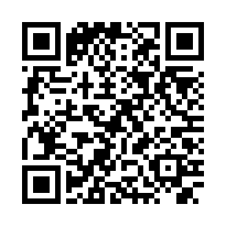
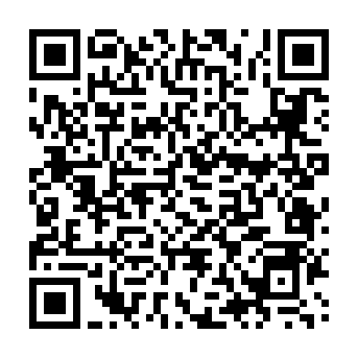

A LITTLE SUPPORT GOES A LONG WAY
Enjoying Tab Atelier?
A voluntary donation helps support development and maintenance. Every feature stays available without donating.
Bitcoin BTC
Network: Bitcoin mainnet

Send BTC only on the Bitcoin network. The amount is up to you; you confirm any payment in your own wallet.
Monero XMR
Network: Monero mainnet

Send XMR only on the Monero network. This donation subaddress remains usable even if Cake Wallet later displays another receiving address.